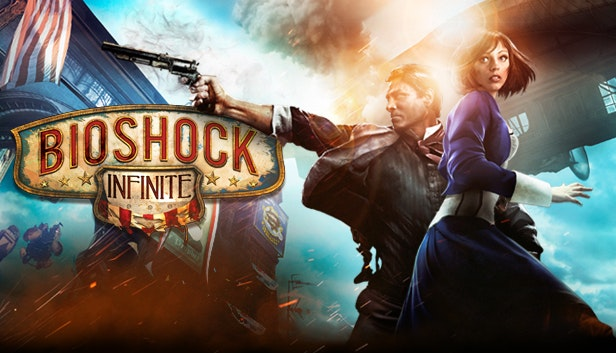

¡El mejor Juego de la historia!

Estilo
Horas
Trama Principal
11
Historia Principal + Extra
15
Completar 100%
25
Enlaces relacionados:
Enlace a mas información en Wikipedia
Comprar en Steam
Analisis BioShock Infinite